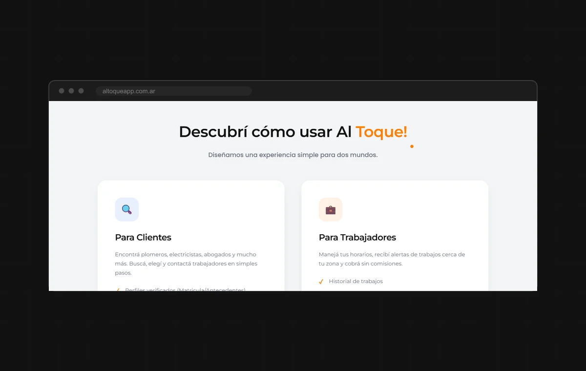

App mobile En pausa
Al Toque!
Una app que conecta clientes con trabajadores verificados, para que encontrar a alguien de confianza no dependa de preguntar entre conocidos.
- Tipo
- App mobile
- Mi rol
- Desarrollo de la app
- Stack
- React Native y Expo
- Estado
- En pausa

01 Qué es
Al Toque! conecta a quien necesita resolver algo con trabajadores verificados de distintos rubros. La app cubre tres categorías:
- Servicios generales. Plomería, electricidad y climatización.
- Servicios profesionales. Asesoramiento legal y contable.
- Alquileres. Herramientas, equipos y artículos para eventos.
La idea es que el cliente encuentre a la persona indicada sin depender de recomendaciones sueltas, y que el trabajador consiga clientes cerca de su zona sin pagar comisiones.
02 Mi rol
Desarrollé la app con React Native y Expo, lo que permite mantener una sola base de código para Android y iOS.
03 Qué hace la app
- Verificación de identidad de los profesionales, con matrícula y antecedentes.
- Chat integrado entre cliente y trabajador.
- Modo SOS para urgencias, que hace visible al trabajador fuera de su horario.
- Sistema de calificaciones y reputación.
- Historial de trabajos realizados.

04 Stack
05 Estado
El proyecto está en pausa, pero podés ver cómo quedó desarrollado en su web.
Fue mi primer desarrollo mobile y el primero pensado como producto, con dos tipos de usuario que necesitan cosas distintas de la misma app.